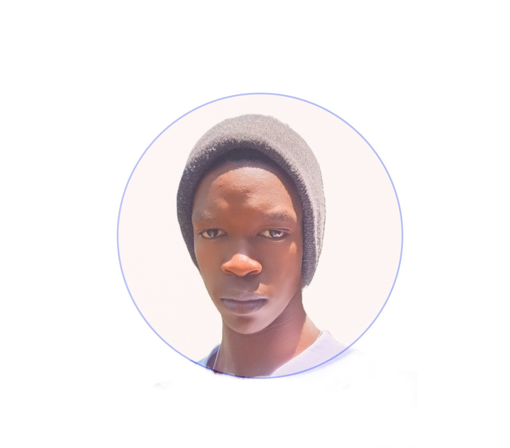

Software development
Breaking problems down and turning ideas into working programs.
Problem solvingProgramming
SOFTWARE ENGINEERING STUDENT KENYA
I’m Dennis Kipkoech, a Software Engineering student at Multimedia University of Kenya. I’m learning by building practical things with code, data, and a healthy dose of curiosity.
My CV
<build />curiosity.exe0101 · learn · repeat FIG. 001 — A WORK IN PROGRESS01 THE PERSON BEHIND THE CODE
A SHORT INTRODUCTIONI’m studying Software Engineering at Multimedia University of Kenya, where I’m building a foundation in how software is designed, built, and used.
Outside the classroom, I’m drawn to the practical side of technology: making useful tools, understanding how data fits together, and finding new ways to automate everyday work. I share what I’m learning as I go.
02 AREAS OF CURIOSITY
ALWAYS LEARNINGA snapshot of where my time and curiosity are going. I’m learning these areas through coursework and personal projects.
Breaking problems down and turning ideas into working programs.
Writing Python programs and exploring how repetitive tasks can be made simpler.
Learning how web experiences connect to structured, useful data.
Getting curious about cybersecurity fundamentals and the possibilities of AI.
These are learning interests, not a claim of professional expertise.
03 SELECTED WORK
LEARNING PROJECTSProjects are where I connect concepts to practice. These are learning projects and ideas in progress.
A desktop application built to practise managing parking spaces and records. It uses a Tkinter interface and SQLite for local data storage.
A concept for a resource that could help aspiring developers find direction, plan what to learn, and build momentum through hands-on projects.
Links marked for editing currently point to a placeholder. Replace them before publishing.
04 THE JOURNEY SO FAR
A FOUNDATION IN PROGRESSMy path so far is rooted in study, experimentation, and turning what I learn into something tangible.
Studying Software Engineering at Multimedia University of Kenya and growing my skills through coursework and personal projects.
Exploring Python, desktop interfaces, databases, and web development by making small, practical things.
Continuing to explore cybersecurity and AI while strengthening my software engineering fundamentals.
05 OPEN TO CONNECTION
I’m always glad to meet fellow learners, talk about technology, or hear about an interesting project.